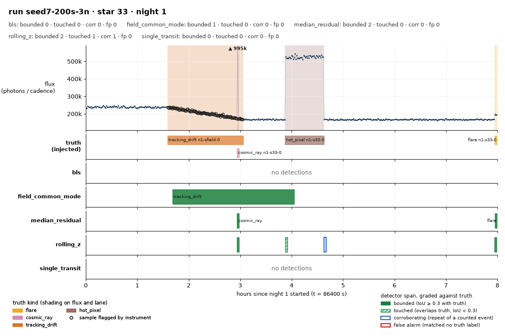
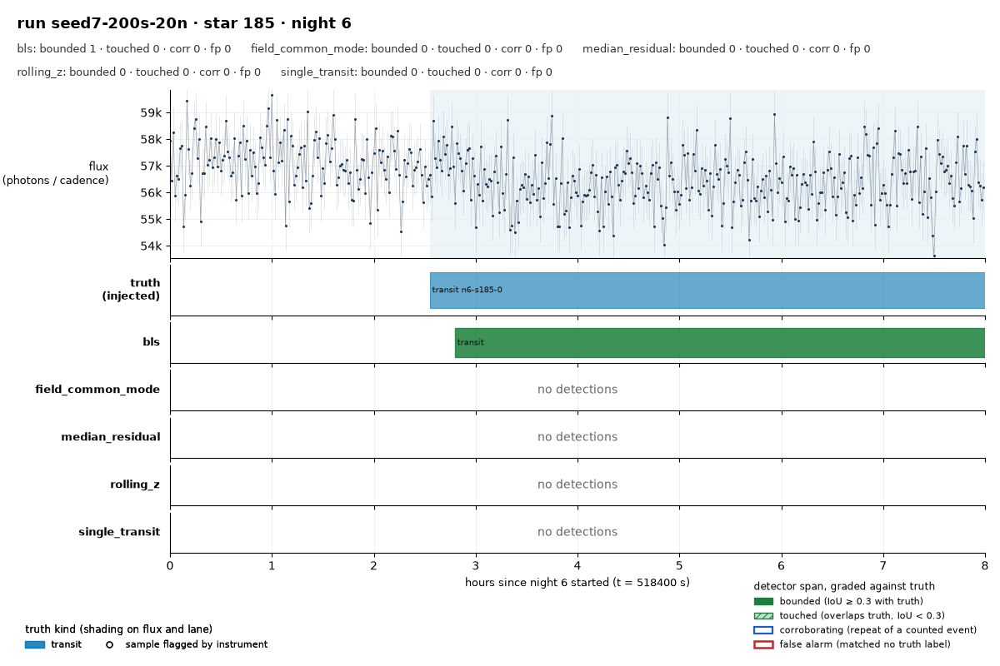
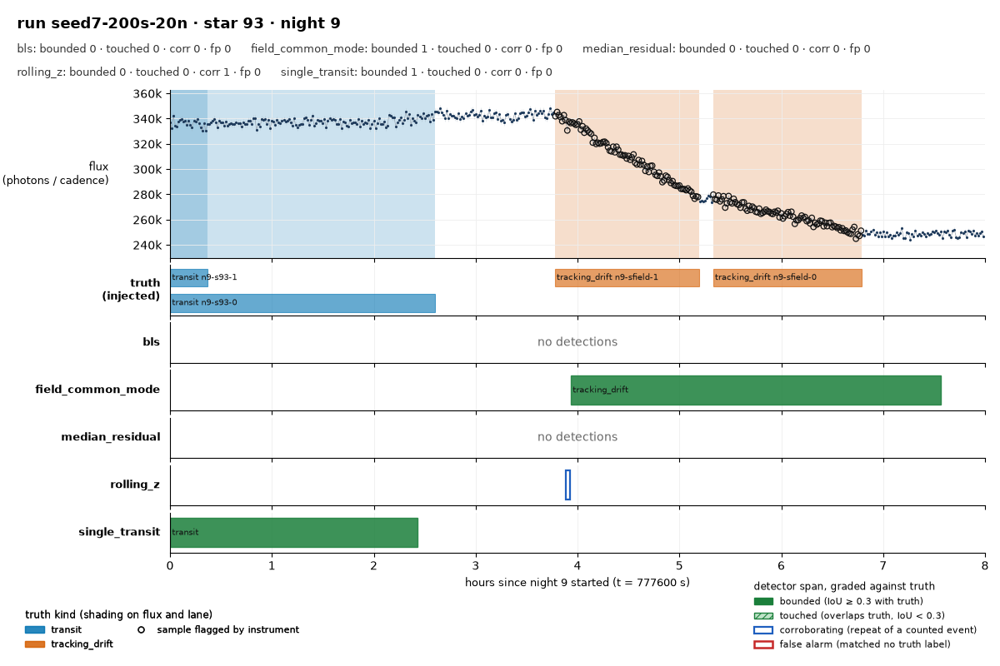
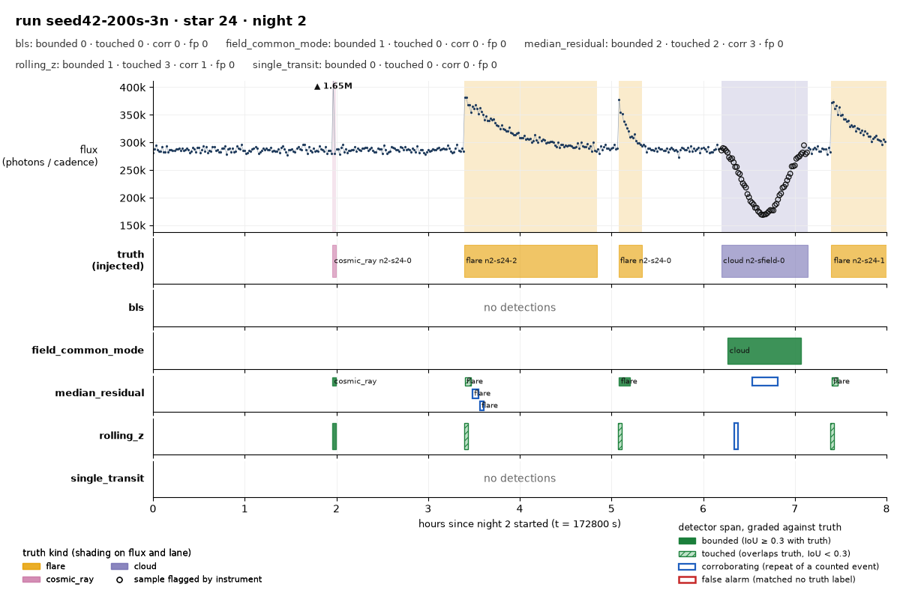
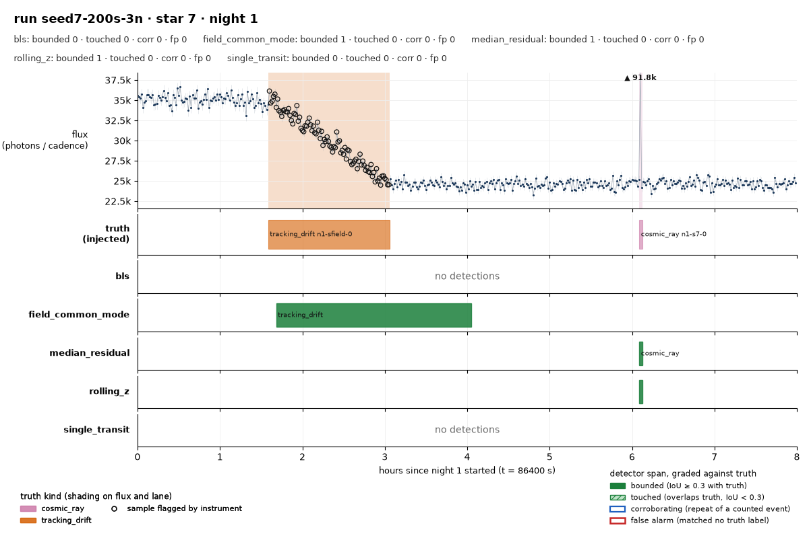

skywatch
A synthetic sky survey where detectors compete to tell science from glitches.
skywatch is an agent-driven project: an AI agent designs it, builds it and decides how it grows, while Charles Coonce sets the constraints and reviews what ships.
What you are looking at
Each picture is one star on one night. The line is the flux the telescope returned, with instrument-flagged samples drawn as hollow rings. The shaded bands under it are the truth the simulator injected, one colour per kind, which the detectors never see. Below the flux is one lane per detector, showing every span it reported on that star and night, coloured by how the scorer graded it: solid green bounded the event (IoU at least 0.3), hatched touched it, a blue outline corroborates an event the detector had already found, and a red outline matched no truth at all.

Scoreboard
seed7-200s-3n
| detector | tpB | tpT | corr | fp | fn | unobs | P | R | F1 | bounded |
|---|---|---|---|---|---|---|---|---|---|---|
| bls | 1 | 0 | 0 | 1 | 401 | 0 | 0.500 | 0.002 | 0.005 | 1.000 |
| field_common_mode | 3 | 0 | 0 | 0 | 399 | 0 | 1.000 | 0.007 | 0.015 | 1.000 |
| median_residual | 196 | 63 | 215 | 8 | 143 | 0 | 0.970 | 0.644 | 0.774 | 0.757 |
| rolling_z | 174 | 96 | 193 | 5 | 132 | 0 | 0.982 | 0.672 | 0.798 | 0.644 |
| single_transit | 2 | 1 | 0 | 0 | 399 | 0 | 1.000 | 0.007 | 0.015 | 0.667 |
Every kind
| detector | kind | tpB | tpT | corr | fp | fn | unobs | P | R | F1 | bounded |
|---|---|---|---|---|---|---|---|---|---|---|---|
| bls | cloud | 0 | 0 | 0 | 0 | 2 | 0 | 0.000 | 0.000 | 0.000 | 0.000 |
| bls | cosmic_ray | 0 | 0 | 0 | 0 | 177 | 0 | 0.000 | 0.000 | 0.000 | 0.000 |
| bls | dropout | 0 | 0 | 0 | 0 | 2 | 0 | 0.000 | 0.000 | 0.000 | 0.000 |
| bls | eclipse | 1 | 0 | 0 | 0 | 24 | 0 | 1.000 | 0.040 | 0.077 | 1.000 |
| bls | flare | 0 | 0 | 0 | 0 | 79 | 0 | 0.000 | 0.000 | 0.000 | 0.000 |
| bls | hot_pixel | 0 | 0 | 0 | 0 | 32 | 0 | 0.000 | 0.000 | 0.000 | 0.000 |
| bls | pulsation | 0 | 0 | 0 | 0 | 75 | 0 | 0.000 | 0.000 | 0.000 | 0.000 |
| bls | tracking_drift | 0 | 0 | 0 | 0 | 1 | 0 | 0.000 | 0.000 | 0.000 | 0.000 |
| bls | transit | 0 | 0 | 0 | 1 | 9 | 0 | 0.000 | 0.000 | 0.000 | 0.000 |
| bls | all | 1 | 0 | 0 | 1 | 401 | 0 | 0.500 | 0.002 | 0.005 | 1.000 |
| field_common_mode | cloud | 2 | 0 | 0 | 0 | 0 | 0 | 1.000 | 1.000 | 1.000 | 1.000 |
| field_common_mode | cosmic_ray | 0 | 0 | 0 | 0 | 177 | 0 | 0.000 | 0.000 | 0.000 | 0.000 |
| field_common_mode | dropout | 0 | 0 | 0 | 0 | 2 | 0 | 0.000 | 0.000 | 0.000 | 0.000 |
| field_common_mode | eclipse | 0 | 0 | 0 | 0 | 25 | 0 | 0.000 | 0.000 | 0.000 | 0.000 |
| field_common_mode | flare | 0 | 0 | 0 | 0 | 79 | 0 | 0.000 | 0.000 | 0.000 | 0.000 |
| field_common_mode | hot_pixel | 0 | 0 | 0 | 0 | 32 | 0 | 0.000 | 0.000 | 0.000 | 0.000 |
| field_common_mode | pulsation | 0 | 0 | 0 | 0 | 75 | 0 | 0.000 | 0.000 | 0.000 | 0.000 |
| field_common_mode | tracking_drift | 1 | 0 | 0 | 0 | 0 | 0 | 1.000 | 1.000 | 1.000 | 1.000 |
| field_common_mode | transit | 0 | 0 | 0 | 0 | 9 | 0 | 0.000 | 0.000 | 0.000 | 0.000 |
| field_common_mode | all | 3 | 0 | 0 | 0 | 399 | 0 | 1.000 | 0.007 | 0.015 | 1.000 |
| median_residual | cloud | 1 | 1 | 204 | 0 | 0 | 0 | 1.000 | 1.000 | 1.000 | 0.500 |
| median_residual | cosmic_ray | 177 | 0 | 0 | 6 | 0 | 0 | 0.967 | 1.000 | 0.983 | 1.000 |
| median_residual | dropout | 0 | 0 | 0 | 0 | 2 | 0 | 0.000 | 0.000 | 0.000 | 0.000 |
| median_residual | eclipse | 0 | 2 | 0 | 0 | 23 | 0 | 1.000 | 0.080 | 0.148 | 0.000 |
| median_residual | flare | 4 | 32 | 8 | 0 | 43 | 0 | 1.000 | 0.456 | 0.626 | 0.111 |
| median_residual | hot_pixel | 14 | 7 | 1 | 0 | 11 | 0 | 1.000 | 0.656 | 0.792 | 0.667 |
| median_residual | pulsation | 0 | 20 | 0 | 0 | 55 | 0 | 1.000 | 0.267 | 0.421 | 0.000 |
| median_residual | tracking_drift | 0 | 1 | 2 | 0 | 0 | 0 | 1.000 | 1.000 | 1.000 | 0.000 |
| median_residual | transit | 0 | 0 | 0 | 0 | 9 | 0 | 0.000 | 0.000 | 0.000 | 0.000 |
| median_residual | unknown | 0 | 0 | 0 | 2 | 0 | 0 | 0.000 | 0.000 | 0.000 | 0.000 |
| median_residual | all | 196 | 63 | 215 | 8 | 143 | 0 | 0.970 | 0.644 | 0.774 | 0.757 |
| rolling_z | cloud | 0 | 2 | 162 | 0 | 0 | 0 | 1.000 | 1.000 | 1.000 | 0.000 |
| rolling_z | cosmic_ray | 173 | 0 | 0 | 0 | 4 | 0 | 1.000 | 0.977 | 0.989 | 1.000 |
| rolling_z | dropout | 0 | 0 | 0 | 0 | 2 | 0 | 0.000 | 0.000 | 0.000 | 0.000 |
| rolling_z | eclipse | 0 | 6 | 1 | 0 | 19 | 0 | 1.000 | 0.240 | 0.387 | 0.000 |
| rolling_z | flare | 1 | 36 | 0 | 0 | 42 | 0 | 1.000 | 0.468 | 0.638 | 0.027 |
| rolling_z | hot_pixel | 0 | 32 | 15 | 0 | 0 | 0 | 1.000 | 1.000 | 1.000 | 0.000 |
| rolling_z | pulsation | 0 | 19 | 1 | 0 | 56 | 0 | 1.000 | 0.253 | 0.404 | 0.000 |
| rolling_z | tracking_drift | 0 | 1 | 14 | 0 | 0 | 0 | 1.000 | 1.000 | 1.000 | 0.000 |
| rolling_z | transit | 0 | 0 | 0 | 0 | 9 | 0 | 0.000 | 0.000 | 0.000 | 0.000 |
| rolling_z | unknown | 0 | 0 | 0 | 5 | 0 | 0 | 0.000 | 0.000 | 0.000 | 0.000 |
| rolling_z | all | 174 | 96 | 193 | 5 | 132 | 0 | 0.982 | 0.672 | 0.798 | 0.644 |
| single_transit | cloud | 0 | 0 | 0 | 0 | 2 | 0 | 0.000 | 0.000 | 0.000 | 0.000 |
| single_transit | cosmic_ray | 0 | 0 | 0 | 0 | 177 | 0 | 0.000 | 0.000 | 0.000 | 0.000 |
| single_transit | dropout | 0 | 0 | 0 | 0 | 2 | 0 | 0.000 | 0.000 | 0.000 | 0.000 |
| single_transit | eclipse | 1 | 1 | 0 | 0 | 23 | 0 | 1.000 | 0.080 | 0.148 | 0.500 |
| single_transit | flare | 0 | 0 | 0 | 0 | 79 | 0 | 0.000 | 0.000 | 0.000 | 0.000 |
| single_transit | hot_pixel | 0 | 0 | 0 | 0 | 32 | 0 | 0.000 | 0.000 | 0.000 | 0.000 |
| single_transit | pulsation | 0 | 0 | 0 | 0 | 75 | 0 | 0.000 | 0.000 | 0.000 | 0.000 |
| single_transit | tracking_drift | 0 | 0 | 0 | 0 | 1 | 0 | 0.000 | 0.000 | 0.000 | 0.000 |
| single_transit | transit | 1 | 0 | 0 | 0 | 8 | 0 | 1.000 | 0.111 | 0.200 | 1.000 |
| single_transit | all | 2 | 1 | 0 | 0 | 399 | 0 | 1.000 | 0.007 | 0.015 | 0.667 |
tpB/tpT = true positives bounded/touched, corr = corroborating, fp = false alarms, fn = missed, unobs = unobservable, excluded from fn and recall, P/R/F1 = precision, recall and F1, bounded = share of true positives that bounded the event
seed42-200s-3n
| detector | tpB | tpT | corr | fp | fn | unobs | P | R | F1 | bounded |
|---|---|---|---|---|---|---|---|---|---|---|
| bls | 2 | 0 | 0 | 0 | 398 | 0 | 1.000 | 0.005 | 0.010 | 1.000 |
| field_common_mode | 1 | 0 | 0 | 0 | 399 | 0 | 1.000 | 0.003 | 0.005 | 1.000 |
| median_residual | 205 | 58 | 212 | 12 | 137 | 0 | 0.956 | 0.657 | 0.779 | 0.779 |
| rolling_z | 184 | 92 | 196 | 13 | 124 | 0 | 0.955 | 0.690 | 0.801 | 0.667 |
| single_transit | 0 | 1 | 0 | 0 | 399 | 0 | 1.000 | 0.003 | 0.005 | 0.000 |
Every kind
| detector | kind | tpB | tpT | corr | fp | fn | unobs | P | R | F1 | bounded |
|---|---|---|---|---|---|---|---|---|---|---|---|
| bls | cloud | 0 | 0 | 0 | 0 | 1 | 0 | 0.000 | 0.000 | 0.000 | 0.000 |
| bls | cosmic_ray | 0 | 0 | 0 | 0 | 181 | 0 | 0.000 | 0.000 | 0.000 | 0.000 |
| bls | dropout | 0 | 0 | 0 | 0 | 1 | 0 | 0.000 | 0.000 | 0.000 | 0.000 |
| bls | eclipse | 2 | 0 | 0 | 0 | 14 | 0 | 1.000 | 0.125 | 0.222 | 1.000 |
| bls | flare | 0 | 0 | 0 | 0 | 58 | 0 | 0.000 | 0.000 | 0.000 | 0.000 |
| bls | hot_pixel | 0 | 0 | 0 | 0 | 33 | 0 | 0.000 | 0.000 | 0.000 | 0.000 |
| bls | pulsation | 0 | 0 | 0 | 0 | 105 | 0 | 0.000 | 0.000 | 0.000 | 0.000 |
| bls | tracking_drift | 0 | 0 | 0 | 0 | 0 | 0 | 0.000 | 0.000 | 0.000 | 0.000 |
| bls | transit | 0 | 0 | 0 | 0 | 5 | 0 | 0.000 | 0.000 | 0.000 | 0.000 |
| bls | all | 2 | 0 | 0 | 0 | 398 | 0 | 1.000 | 0.005 | 0.010 | 1.000 |
| field_common_mode | cloud | 1 | 0 | 0 | 0 | 0 | 0 | 1.000 | 1.000 | 1.000 | 1.000 |
| field_common_mode | cosmic_ray | 0 | 0 | 0 | 0 | 181 | 0 | 0.000 | 0.000 | 0.000 | 0.000 |
| field_common_mode | dropout | 0 | 0 | 0 | 0 | 1 | 0 | 0.000 | 0.000 | 0.000 | 0.000 |
| field_common_mode | eclipse | 0 | 0 | 0 | 0 | 16 | 0 | 0.000 | 0.000 | 0.000 | 0.000 |
| field_common_mode | flare | 0 | 0 | 0 | 0 | 58 | 0 | 0.000 | 0.000 | 0.000 | 0.000 |
| field_common_mode | hot_pixel | 0 | 0 | 0 | 0 | 33 | 0 | 0.000 | 0.000 | 0.000 | 0.000 |
| field_common_mode | pulsation | 0 | 0 | 0 | 0 | 105 | 0 | 0.000 | 0.000 | 0.000 | 0.000 |
| field_common_mode | tracking_drift | 0 | 0 | 0 | 0 | 0 | 0 | 0.000 | 0.000 | 0.000 | 0.000 |
| field_common_mode | transit | 0 | 0 | 0 | 0 | 5 | 0 | 0.000 | 0.000 | 0.000 | 0.000 |
| field_common_mode | all | 1 | 0 | 0 | 0 | 399 | 0 | 1.000 | 0.003 | 0.005 | 1.000 |
| median_residual | cloud | 1 | 0 | 202 | 0 | 0 | 0 | 1.000 | 1.000 | 1.000 | 1.000 |
| median_residual | cosmic_ray | 181 | 0 | 0 | 6 | 0 | 0 | 0.968 | 1.000 | 0.984 | 1.000 |
| median_residual | dropout | 0 | 0 | 0 | 0 | 1 | 0 | 0.000 | 0.000 | 0.000 | 0.000 |
| median_residual | eclipse | 0 | 3 | 1 | 0 | 13 | 0 | 1.000 | 0.188 | 0.316 | 0.000 |
| median_residual | flare | 5 | 20 | 9 | 0 | 33 | 0 | 1.000 | 0.431 | 0.602 | 0.200 |
| median_residual | hot_pixel | 18 | 1 | 0 | 0 | 14 | 0 | 1.000 | 0.576 | 0.731 | 0.947 |
| median_residual | pulsation | 0 | 33 | 0 | 0 | 72 | 0 | 1.000 | 0.314 | 0.478 | 0.000 |
| median_residual | tracking_drift | 0 | 0 | 0 | 0 | 0 | 0 | 0.000 | 0.000 | 0.000 | 0.000 |
| median_residual | transit | 0 | 1 | 0 | 0 | 4 | 0 | 1.000 | 0.200 | 0.333 | 0.000 |
| median_residual | unknown | 0 | 0 | 0 | 6 | 0 | 0 | 0.000 | 0.000 | 0.000 | 0.000 |
| median_residual | all | 205 | 58 | 212 | 12 | 137 | 0 | 0.956 | 0.657 | 0.779 | 0.779 |
| rolling_z | cloud | 0 | 1 | 181 | 0 | 0 | 0 | 1.000 | 1.000 | 1.000 | 0.000 |
| rolling_z | cosmic_ray | 179 | 0 | 0 | 0 | 2 | 0 | 1.000 | 0.989 | 0.994 | 1.000 |
| rolling_z | dropout | 0 | 0 | 0 | 0 | 1 | 0 | 0.000 | 0.000 | 0.000 | 0.000 |
| rolling_z | eclipse | 0 | 2 | 0 | 0 | 14 | 0 | 1.000 | 0.125 | 0.222 | 0.000 |
| rolling_z | flare | 1 | 30 | 1 | 0 | 27 | 0 | 1.000 | 0.534 | 0.697 | 0.032 |
| rolling_z | hot_pixel | 4 | 28 | 13 | 0 | 1 | 0 | 1.000 | 0.970 | 0.985 | 0.125 |
| rolling_z | pulsation | 0 | 30 | 1 | 0 | 75 | 0 | 1.000 | 0.286 | 0.444 | 0.000 |
| rolling_z | tracking_drift | 0 | 0 | 0 | 0 | 0 | 0 | 0.000 | 0.000 | 0.000 | 0.000 |
| rolling_z | transit | 0 | 1 | 0 | 0 | 4 | 0 | 1.000 | 0.200 | 0.333 | 0.000 |
| rolling_z | unknown | 0 | 0 | 0 | 13 | 0 | 0 | 0.000 | 0.000 | 0.000 | 0.000 |
| rolling_z | all | 184 | 92 | 196 | 13 | 124 | 0 | 0.955 | 0.690 | 0.801 | 0.667 |
| single_transit | cloud | 0 | 0 | 0 | 0 | 1 | 0 | 0.000 | 0.000 | 0.000 | 0.000 |
| single_transit | cosmic_ray | 0 | 0 | 0 | 0 | 181 | 0 | 0.000 | 0.000 | 0.000 | 0.000 |
| single_transit | dropout | 0 | 0 | 0 | 0 | 1 | 0 | 0.000 | 0.000 | 0.000 | 0.000 |
| single_transit | eclipse | 0 | 0 | 0 | 0 | 16 | 0 | 0.000 | 0.000 | 0.000 | 0.000 |
| single_transit | flare | 0 | 0 | 0 | 0 | 58 | 0 | 0.000 | 0.000 | 0.000 | 0.000 |
| single_transit | hot_pixel | 0 | 0 | 0 | 0 | 33 | 0 | 0.000 | 0.000 | 0.000 | 0.000 |
| single_transit | pulsation | 0 | 1 | 0 | 0 | 104 | 0 | 1.000 | 0.010 | 0.019 | 0.000 |
| single_transit | tracking_drift | 0 | 0 | 0 | 0 | 0 | 0 | 0.000 | 0.000 | 0.000 | 0.000 |
| single_transit | transit | 0 | 0 | 0 | 0 | 5 | 0 | 0.000 | 0.000 | 0.000 | 0.000 |
| single_transit | all | 0 | 1 | 0 | 0 | 399 | 0 | 1.000 | 0.003 | 0.005 | 0.000 |
tpB/tpT = true positives bounded/touched, corr = corroborating, fp = false alarms, fn = missed, unobs = unobservable, excluded from fn and recall, P/R/F1 = precision, recall and F1, bounded = share of true positives that bounded the event
seed7-200s-20n
| detector | tpB | tpT | corr | fp | fn | unobs | P | R | F1 | bounded |
|---|---|---|---|---|---|---|---|---|---|---|
| bls | 8 | 1 | 0 | 2 | 2591 | 2 | 0.818 | 0.003 | 0.007 | 0.889 |
| field_common_mode | 28 | 0 | 0 | 0 | 2572 | 2 | 1.000 | 0.011 | 0.021 | 1.000 |
| median_residual | 1327 | 498 | 2626 | 69 | 775 | 2 | 0.964 | 0.702 | 0.812 | 0.727 |
| rolling_z | 1165 | 724 | 2446 | 67 | 711 | 2 | 0.966 | 0.727 | 0.829 | 0.617 |
| single_transit | 3 | 2 | 0 | 0 | 2595 | 2 | 1.000 | 0.002 | 0.004 | 0.600 |
Every kind
| detector | kind | tpB | tpT | corr | fp | fn | unobs | P | R | F1 | bounded |
|---|---|---|---|---|---|---|---|---|---|---|---|
| bls | cloud | 0 | 1 | 0 | 0 | 16 | 0 | 1.000 | 0.059 | 0.111 | 0.000 |
| bls | cosmic_ray | 1 | 0 | 0 | 0 | 1190 | 0 | 1.000 | 0.001 | 0.002 | 1.000 |
| bls | dropout | 0 | 0 | 0 | 0 | 11 | 0 | 0.000 | 0.000 | 0.000 | 0.000 |
| bls | eclipse | 0 | 0 | 0 | 0 | 153 | 0 | 0.000 | 0.000 | 0.000 | 0.000 |
| bls | flare | 0 | 0 | 0 | 0 | 459 | 1 | 0.000 | 0.000 | 0.000 | 0.000 |
| bls | hot_pixel | 0 | 0 | 0 | 0 | 190 | 1 | 0.000 | 0.000 | 0.000 | 0.000 |
| bls | pulsation | 0 | 0 | 0 | 0 | 500 | 0 | 0.000 | 0.000 | 0.000 | 0.000 |
| bls | tracking_drift | 0 | 0 | 0 | 0 | 9 | 0 | 0.000 | 0.000 | 0.000 | 0.000 |
| bls | transit | 7 | 0 | 0 | 2 | 63 | 0 | 0.778 | 0.100 | 0.177 | 1.000 |
| bls | all | 8 | 1 | 0 | 2 | 2591 | 2 | 0.818 | 0.003 | 0.007 | 0.889 |
| field_common_mode | cloud | 16 | 0 | 0 | 0 | 1 | 0 | 1.000 | 0.941 | 0.970 | 1.000 |
| field_common_mode | cosmic_ray | 0 | 0 | 0 | 0 | 1191 | 0 | 0.000 | 0.000 | 0.000 | 0.000 |
| field_common_mode | dropout | 5 | 0 | 0 | 0 | 6 | 0 | 1.000 | 0.455 | 0.625 | 1.000 |
| field_common_mode | eclipse | 0 | 0 | 0 | 0 | 153 | 0 | 0.000 | 0.000 | 0.000 | 0.000 |
| field_common_mode | flare | 0 | 0 | 0 | 0 | 459 | 1 | 0.000 | 0.000 | 0.000 | 0.000 |
| field_common_mode | hot_pixel | 0 | 0 | 0 | 0 | 190 | 1 | 0.000 | 0.000 | 0.000 | 0.000 |
| field_common_mode | pulsation | 0 | 0 | 0 | 0 | 500 | 0 | 0.000 | 0.000 | 0.000 | 0.000 |
| field_common_mode | tracking_drift | 7 | 0 | 0 | 0 | 2 | 0 | 1.000 | 0.778 | 0.875 | 1.000 |
| field_common_mode | transit | 0 | 0 | 0 | 0 | 70 | 0 | 0.000 | 0.000 | 0.000 | 0.000 |
| field_common_mode | all | 28 | 0 | 0 | 0 | 2572 | 2 | 1.000 | 0.011 | 0.021 | 1.000 |
| median_residual | cloud | 14 | 2 | 2553 | 0 | 1 | 0 | 1.000 | 0.941 | 0.970 | 0.875 |
| median_residual | cosmic_ray | 1178 | 0 | 0 | 33 | 13 | 0 | 0.973 | 0.989 | 0.981 | 1.000 |
| median_residual | dropout | 1 | 0 | 0 | 0 | 10 | 0 | 1.000 | 0.091 | 0.167 | 1.000 |
| median_residual | eclipse | 0 | 31 | 3 | 0 | 122 | 0 | 1.000 | 0.203 | 0.337 | 0.000 |
| median_residual | flare | 45 | 152 | 47 | 0 | 262 | 1 | 1.000 | 0.429 | 0.601 | 0.228 |
| median_residual | hot_pixel | 88 | 33 | 2 | 0 | 69 | 1 | 1.000 | 0.637 | 0.778 | 0.727 |
| median_residual | pulsation | 0 | 261 | 7 | 0 | 239 | 0 | 1.000 | 0.522 | 0.686 | 0.000 |
| median_residual | tracking_drift | 0 | 9 | 14 | 0 | 0 | 0 | 1.000 | 1.000 | 1.000 | 0.000 |
| median_residual | transit | 1 | 10 | 0 | 0 | 59 | 0 | 1.000 | 0.157 | 0.272 | 0.091 |
| median_residual | unknown | 0 | 0 | 0 | 36 | 0 | 0 | 0.000 | 0.000 | 0.000 | 0.000 |
| median_residual | all | 1327 | 498 | 2626 | 69 | 775 | 2 | 0.964 | 0.702 | 0.812 | 0.727 |
| rolling_z | cloud | 7 | 9 | 2187 | 0 | 1 | 0 | 1.000 | 0.941 | 0.970 | 0.438 |
| rolling_z | cosmic_ray | 1149 | 0 | 0 | 0 | 42 | 0 | 1.000 | 0.965 | 0.982 | 1.000 |
| rolling_z | dropout | 0 | 0 | 0 | 0 | 11 | 0 | 0.000 | 0.000 | 0.000 | 0.000 |
| rolling_z | eclipse | 0 | 38 | 4 | 0 | 115 | 0 | 1.000 | 0.248 | 0.398 | 0.000 |
| rolling_z | flare | 2 | 229 | 1 | 0 | 228 | 1 | 1.000 | 0.503 | 0.670 | 0.009 |
| rolling_z | hot_pixel | 7 | 181 | 73 | 0 | 2 | 1 | 1.000 | 0.989 | 0.995 | 0.037 |
| rolling_z | pulsation | 0 | 250 | 9 | 0 | 250 | 0 | 1.000 | 0.500 | 0.667 | 0.000 |
| rolling_z | tracking_drift | 0 | 9 | 172 | 0 | 0 | 0 | 1.000 | 1.000 | 1.000 | 0.000 |
| rolling_z | transit | 0 | 8 | 0 | 0 | 62 | 0 | 1.000 | 0.114 | 0.205 | 0.000 |
| rolling_z | unknown | 0 | 0 | 0 | 67 | 0 | 0 | 0.000 | 0.000 | 0.000 | 0.000 |
| rolling_z | all | 1165 | 724 | 2446 | 67 | 711 | 2 | 0.966 | 0.727 | 0.829 | 0.617 |
| single_transit | cloud | 0 | 0 | 0 | 0 | 17 | 0 | 0.000 | 0.000 | 0.000 | 0.000 |
| single_transit | cosmic_ray | 0 | 0 | 0 | 0 | 1191 | 0 | 0.000 | 0.000 | 0.000 | 0.000 |
| single_transit | dropout | 0 | 0 | 0 | 0 | 11 | 0 | 0.000 | 0.000 | 0.000 | 0.000 |
| single_transit | eclipse | 0 | 2 | 0 | 0 | 151 | 0 | 1.000 | 0.013 | 0.026 | 0.000 |
| single_transit | flare | 0 | 0 | 0 | 0 | 459 | 1 | 0.000 | 0.000 | 0.000 | 0.000 |
| single_transit | hot_pixel | 0 | 0 | 0 | 0 | 190 | 1 | 0.000 | 0.000 | 0.000 | 0.000 |
| single_transit | pulsation | 0 | 0 | 0 | 0 | 500 | 0 | 0.000 | 0.000 | 0.000 | 0.000 |
| single_transit | tracking_drift | 0 | 0 | 0 | 0 | 9 | 0 | 0.000 | 0.000 | 0.000 | 0.000 |
| single_transit | transit | 3 | 0 | 0 | 0 | 67 | 0 | 1.000 | 0.043 | 0.082 | 1.000 |
| single_transit | all | 3 | 2 | 0 | 0 | 2595 | 2 | 1.000 | 0.002 | 0.004 | 0.600 |
tpB/tpT = true positives bounded/touched, corr = corroborating, fp = false alarms, fn = missed, unobs = unobservable, excluded from fn and recall, P/R/F1 = precision, recall and F1, bounded = share of true positives that bounded the event
seed42-200s-20n
| detector | tpB | tpT | corr | fp | fn | unobs | P | R | F1 | bounded |
|---|---|---|---|---|---|---|---|---|---|---|
| bls | 6 | 2 | 0 | 3 | 2619 | 0 | 0.727 | 0.003 | 0.006 | 0.750 |
| field_common_mode | 22 | 2 | 3 | 0 | 2603 | 0 | 1.000 | 0.009 | 0.018 | 0.917 |
| median_residual | 1333 | 512 | 1979 | 55 | 782 | 0 | 0.971 | 0.702 | 0.815 | 0.722 |
| rolling_z | 1186 | 749 | 2294 | 70 | 692 | 0 | 0.965 | 0.737 | 0.835 | 0.613 |
| single_transit | 4 | 0 | 0 | 0 | 2623 | 0 | 1.000 | 0.002 | 0.003 | 1.000 |
Every kind
| detector | kind | tpB | tpT | corr | fp | fn | unobs | P | R | F1 | bounded |
|---|---|---|---|---|---|---|---|---|---|---|---|
| bls | cloud | 0 | 0 | 0 | 0 | 14 | 0 | 0.000 | 0.000 | 0.000 | 0.000 |
| bls | cosmic_ray | 2 | 0 | 0 | 0 | 1216 | 0 | 1.000 | 0.002 | 0.003 | 1.000 |
| bls | dropout | 0 | 0 | 0 | 0 | 11 | 0 | 0.000 | 0.000 | 0.000 | 0.000 |
| bls | eclipse | 0 | 0 | 0 | 0 | 95 | 0 | 0.000 | 0.000 | 0.000 | 0.000 |
| bls | flare | 0 | 1 | 0 | 0 | 322 | 0 | 1.000 | 0.003 | 0.006 | 0.000 |
| bls | hot_pixel | 0 | 0 | 0 | 0 | 214 | 0 | 0.000 | 0.000 | 0.000 | 0.000 |
| bls | pulsation | 0 | 0 | 0 | 0 | 700 | 0 | 0.000 | 0.000 | 0.000 | 0.000 |
| bls | tracking_drift | 0 | 1 | 0 | 0 | 4 | 0 | 1.000 | 0.200 | 0.333 | 0.000 |
| bls | transit | 4 | 0 | 0 | 3 | 43 | 0 | 0.571 | 0.085 | 0.148 | 1.000 |
| bls | all | 6 | 2 | 0 | 3 | 2619 | 0 | 0.727 | 0.003 | 0.006 | 0.750 |
| field_common_mode | cloud | 13 | 1 | 2 | 0 | 0 | 0 | 1.000 | 1.000 | 1.000 | 0.929 |
| field_common_mode | cosmic_ray | 0 | 0 | 0 | 0 | 1218 | 0 | 0.000 | 0.000 | 0.000 | 0.000 |
| field_common_mode | dropout | 6 | 0 | 0 | 0 | 5 | 0 | 1.000 | 0.545 | 0.706 | 1.000 |
| field_common_mode | eclipse | 0 | 0 | 0 | 0 | 95 | 0 | 0.000 | 0.000 | 0.000 | 0.000 |
| field_common_mode | flare | 0 | 0 | 0 | 0 | 323 | 0 | 0.000 | 0.000 | 0.000 | 0.000 |
| field_common_mode | hot_pixel | 0 | 0 | 0 | 0 | 214 | 0 | 0.000 | 0.000 | 0.000 | 0.000 |
| field_common_mode | pulsation | 0 | 0 | 0 | 0 | 700 | 0 | 0.000 | 0.000 | 0.000 | 0.000 |
| field_common_mode | tracking_drift | 3 | 1 | 1 | 0 | 1 | 0 | 1.000 | 0.800 | 0.889 | 0.750 |
| field_common_mode | transit | 0 | 0 | 0 | 0 | 47 | 0 | 0.000 | 0.000 | 0.000 | 0.000 |
| field_common_mode | all | 22 | 2 | 3 | 0 | 2603 | 0 | 1.000 | 0.009 | 0.018 | 0.917 |
| median_residual | cloud | 12 | 1 | 1923 | 0 | 1 | 0 | 1.000 | 0.929 | 0.963 | 0.923 |
| median_residual | cosmic_ray | 1205 | 0 | 0 | 27 | 13 | 0 | 0.978 | 0.989 | 0.984 | 1.000 |
| median_residual | dropout | 1 | 2 | 2 | 0 | 8 | 0 | 1.000 | 0.273 | 0.429 | 0.333 |
| median_residual | eclipse | 1 | 33 | 8 | 0 | 61 | 0 | 1.000 | 0.358 | 0.527 | 0.029 |
| median_residual | flare | 28 | 116 | 33 | 0 | 179 | 0 | 1.000 | 0.446 | 0.617 | 0.194 |
| median_residual | hot_pixel | 86 | 32 | 2 | 0 | 96 | 0 | 1.000 | 0.551 | 0.711 | 0.729 |
| median_residual | pulsation | 0 | 313 | 8 | 0 | 387 | 0 | 1.000 | 0.447 | 0.618 | 0.000 |
| median_residual | tracking_drift | 0 | 4 | 3 | 0 | 1 | 0 | 1.000 | 0.800 | 0.889 | 0.000 |
| median_residual | transit | 0 | 11 | 0 | 0 | 36 | 0 | 1.000 | 0.234 | 0.379 | 0.000 |
| median_residual | unknown | 0 | 0 | 0 | 28 | 0 | 0 | 0.000 | 0.000 | 0.000 | 0.000 |
| median_residual | all | 1333 | 512 | 1979 | 55 | 782 | 0 | 0.971 | 0.702 | 0.815 | 0.722 |
| rolling_z | cloud | 3 | 10 | 2174 | 0 | 1 | 0 | 1.000 | 0.929 | 0.963 | 0.231 |
| rolling_z | cosmic_ray | 1169 | 0 | 0 | 0 | 49 | 0 | 1.000 | 0.960 | 0.979 | 1.000 |
| rolling_z | dropout | 1 | 0 | 0 | 0 | 10 | 0 | 1.000 | 0.091 | 0.167 | 1.000 |
| rolling_z | eclipse | 0 | 28 | 3 | 0 | 67 | 0 | 1.000 | 0.295 | 0.455 | 0.000 |
| rolling_z | flare | 2 | 169 | 3 | 0 | 152 | 0 | 1.000 | 0.529 | 0.692 | 0.012 |
| rolling_z | hot_pixel | 11 | 200 | 85 | 0 | 3 | 0 | 1.000 | 0.986 | 0.993 | 0.052 |
| rolling_z | pulsation | 0 | 327 | 7 | 0 | 373 | 0 | 1.000 | 0.467 | 0.637 | 0.000 |
| rolling_z | tracking_drift | 0 | 4 | 22 | 0 | 1 | 0 | 1.000 | 0.800 | 0.889 | 0.000 |
| rolling_z | transit | 0 | 11 | 0 | 0 | 36 | 0 | 1.000 | 0.234 | 0.379 | 0.000 |
| rolling_z | unknown | 0 | 0 | 0 | 70 | 0 | 0 | 0.000 | 0.000 | 0.000 | 0.000 |
| rolling_z | all | 1186 | 749 | 2294 | 70 | 692 | 0 | 0.965 | 0.737 | 0.835 | 0.613 |
| single_transit | cloud | 0 | 0 | 0 | 0 | 14 | 0 | 0.000 | 0.000 | 0.000 | 0.000 |
| single_transit | cosmic_ray | 0 | 0 | 0 | 0 | 1218 | 0 | 0.000 | 0.000 | 0.000 | 0.000 |
| single_transit | dropout | 0 | 0 | 0 | 0 | 11 | 0 | 0.000 | 0.000 | 0.000 | 0.000 |
| single_transit | eclipse | 0 | 0 | 0 | 0 | 95 | 0 | 0.000 | 0.000 | 0.000 | 0.000 |
| single_transit | flare | 0 | 0 | 0 | 0 | 323 | 0 | 0.000 | 0.000 | 0.000 | 0.000 |
| single_transit | hot_pixel | 0 | 0 | 0 | 0 | 214 | 0 | 0.000 | 0.000 | 0.000 | 0.000 |
| single_transit | pulsation | 0 | 0 | 0 | 0 | 700 | 0 | 0.000 | 0.000 | 0.000 | 0.000 |
| single_transit | tracking_drift | 0 | 0 | 0 | 0 | 5 | 0 | 0.000 | 0.000 | 0.000 | 0.000 |
| single_transit | transit | 4 | 0 | 0 | 0 | 43 | 0 | 1.000 | 0.085 | 0.157 | 1.000 |
| single_transit | all | 4 | 0 | 0 | 0 | 2623 | 0 | 1.000 | 0.002 | 0.003 | 1.000 |
tpB/tpT = true positives bounded/touched, corr = corroborating, fp = false alarms, fn = missed, unobs = unobservable, excluded from fn and recall, P/R/F1 = precision, recall and F1, bounded = share of true positives that bounded the event
More views




Regenerate
Everything on this page rebuilds from the seeds with these commands.
skywatch simulate --seed 7 --stars 200 --nights 3 --run-id seed7-200s-3n skywatch detect --run runs/seed7-200s-3n --detector bls skywatch detect --run runs/seed7-200s-3n --detector field_common_mode skywatch detect --run runs/seed7-200s-3n --detector median_residual skywatch detect --run runs/seed7-200s-3n --detector rolling_z skywatch detect --run runs/seed7-200s-3n --detector single_transit skywatch score --run runs/seed7-200s-3n skywatch simulate --seed 42 --stars 200 --nights 3 --run-id seed42-200s-3n skywatch detect --run runs/seed42-200s-3n --detector bls skywatch detect --run runs/seed42-200s-3n --detector field_common_mode skywatch detect --run runs/seed42-200s-3n --detector median_residual skywatch detect --run runs/seed42-200s-3n --detector rolling_z skywatch detect --run runs/seed42-200s-3n --detector single_transit skywatch score --run runs/seed42-200s-3n skywatch simulate --seed 7 --stars 200 --nights 20 --run-id seed7-200s-20n skywatch detect --run runs/seed7-200s-20n --detector bls skywatch detect --run runs/seed7-200s-20n --detector field_common_mode skywatch detect --run runs/seed7-200s-20n --detector median_residual skywatch detect --run runs/seed7-200s-20n --detector rolling_z skywatch detect --run runs/seed7-200s-20n --detector single_transit skywatch score --run runs/seed7-200s-20n skywatch simulate --seed 42 --stars 200 --nights 20 --run-id seed42-200s-20n skywatch detect --run runs/seed42-200s-20n --detector bls skywatch detect --run runs/seed42-200s-20n --detector field_common_mode skywatch detect --run runs/seed42-200s-20n --detector median_residual skywatch detect --run runs/seed42-200s-20n --detector rolling_z skywatch detect --run runs/seed42-200s-20n --detector single_transit skywatch score --run runs/seed42-200s-20n skywatch site --spec docs/site.json